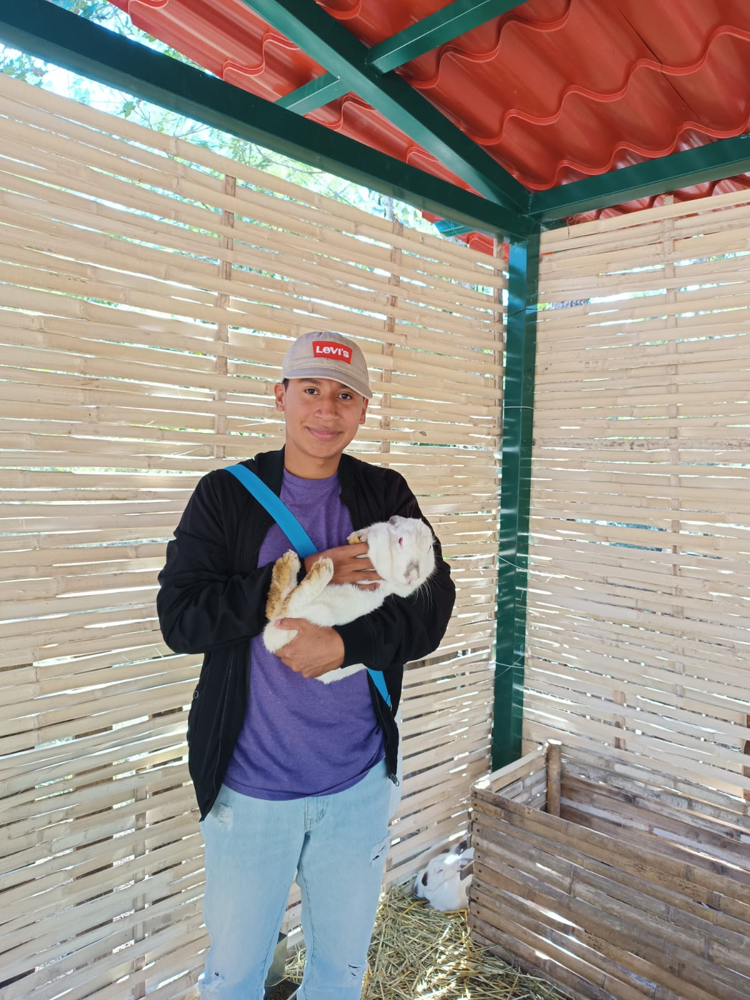

Acerca de Mi

Mi nombre completo es Walter Villegas Mendoza, tengo 22 años y peso 72kg, nací el 22 de Septiembre del 2002 en el municipio de San Andrés Tuxtla, Veracruz.
Desde pequeño he sido apacionado de los deportes, empezando a mis 7 años en el mundo del basquetbol, pasando por voleibol a mis 9 años y terminando por el futbol a partir de mis 11 años.
Tome gusto por el mundo de la administración y los negocios a partir de la prepa ya que estudie en un CETis en el cual lleve la carrera técnica de Administración de Recursos Humanos.
En el 2020, en plena pandemia, sufri apendicitis por lo cual me tuvieron que operar, la única operación que he tenido hasta el momento en mi vida
Si gustas seguirme o agregarme en alguna de mis redes sociales puedes hacerlo haciendo click en los iconos de abajo.